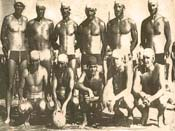
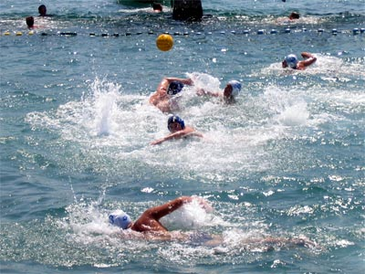

Today I came across an old photo and names of generation 1974. on one of respected and relevant blog about Water Polo.
This blog is actually one big collection of materials concerning history of water polo titled "Water Polo Legends". It contains huge amount of information about Water Polo history and is becoming a relevant water polo history data base. Today, Internet being most influential information source, this means a lot to the club identity and reputation.

Croatia vs. Bishops
Waterpolo season 2008. has started and VK Croatia is competing in categories of cadets and juniors. Unfortunately, same old story is happening again - we do not have enough players old enough to equally compete, so we have to put a few years younger players to fill the team. But as much as this situation is bad for results it is also good for our players as they are competing with older and stronger oponents and they are developing their skills and and strength much faster in that sorrounding.